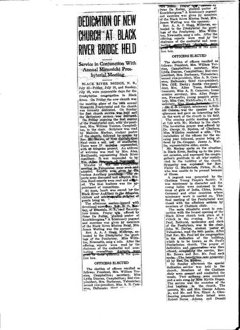
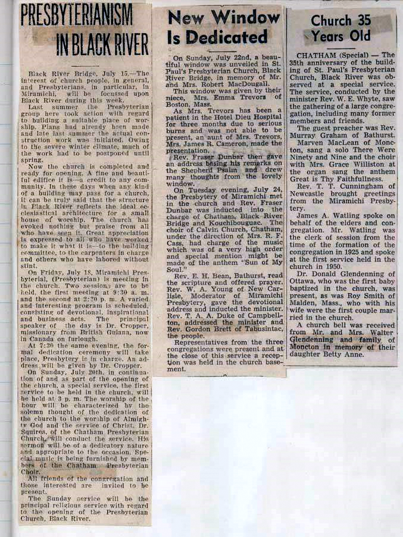
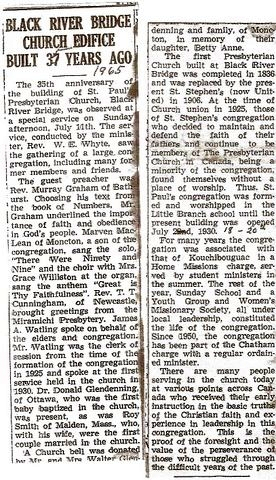
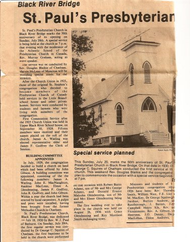
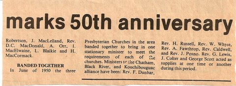
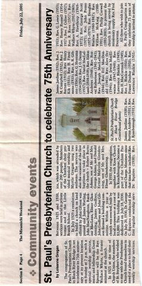

ST. PAUL’S PRESBYTERIAN CHURCH

St. Paul’s Dedication, July 18, 1930
Source unknown and undated
ST. PAUL’S PRESBYTERIAN CHURCH


St. Paul’s Dedication, July 18, 1930
Source undated and unknown
ST. PAUL’S PRESBYTERIAN CHURCH

ST PAUL’S PRESBYTERIAN CHURCH

ST. PAUL’S PRESBYTERIAN CHURCH

Misc. clippings
Source and Date unknown
ST. PAUL’S PRESBYTERIAN CHURCH

Miramichi Presbytery 1935
Source and Date Unknown
ST. PAUL’S PRESBYTERIAN CHURCH

Anniversary 1955
Source and date unknown
ST. PAUL’S PRESYTERIAN CHURCH

ST. PAUL’S PRESBYTERIAN CHURCH

50th Anniversary
Miramichi Weekend, July 18, 1980
ST. PAUL’S PRESBYTERIAN CHURCH

50th Anniversary
Miramichi Weekend, July 18, 1980
ST. PAUL’S PRESBYTERIAN CHURCH

Anniversary 2005
ST. PAUL’S PRRESBYTERIAN CHURCH
Anniversary 2005